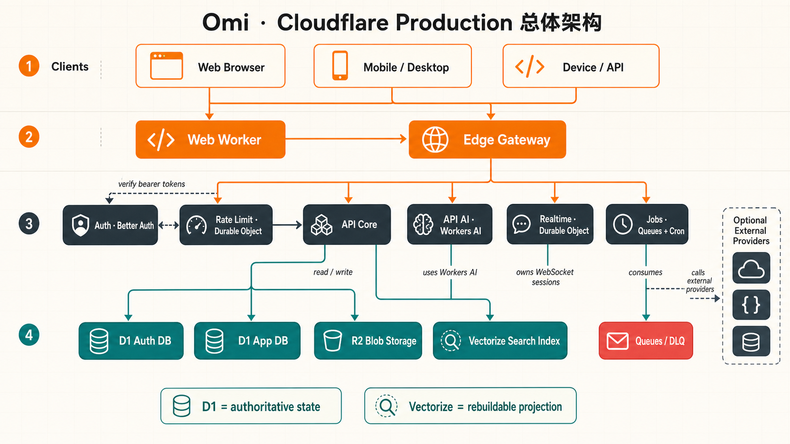
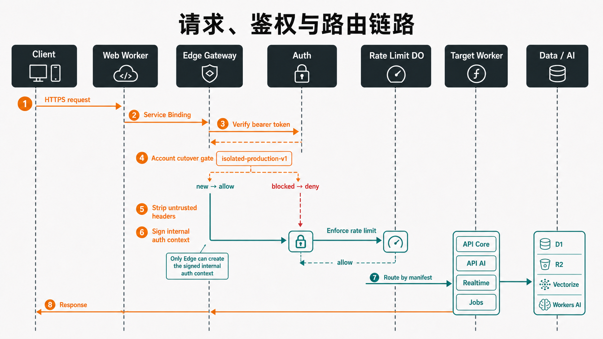
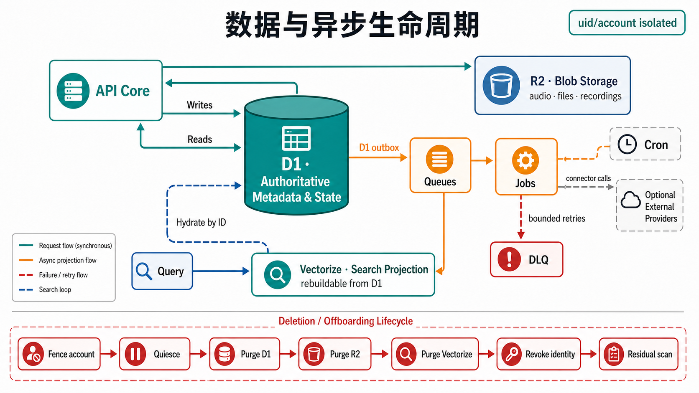
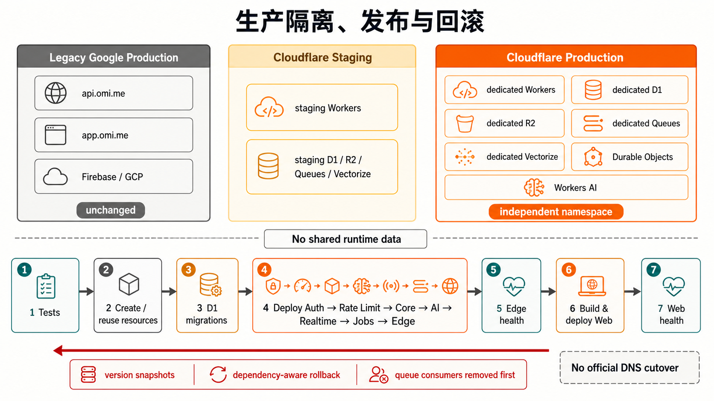

01 · Executive state
结论与当前状态
当前版本已经真正部署到 Cloudflare，并完成生产级鉴权、Workers AI、浏览器、性能、迁移与删号残留验证。 它不是 legacy backend 的代理壳，也不是 staging 与生产资源的复用组合。
最重要的边界：Cloudflare Production 只承载新创建的 Cloudflare-native 账号。 既有 Firebase 身份、Firestore/GCS 历史数据和官方域名流量没有被自动导入、重分类或切换。

公开入口
独立适配分支
Cloudflare 适配由 codex/cloudflare-adaptation 单独维护。生产发布不依赖把另一个适配分支合并进来，
也不修改 legacy serving plane。
02 · Scope & invariants
架构边界
这套架构的目标是“在 Cloudflare 上独立成立”，而不是在一个请求里同时依赖 Cloudflare 与 Google 数据权威。
当前承载
- Better Auth 新账号与会话。
- Web、移动端、桌面端和设备 API。
- D1/R2 上的业务数据与文件。
- Workers AI 的聊天、Embedding、ASR、TTS、翻译。
- Queues/Jobs 异步任务和 Vectorize 投影。
明确隔离
api.omi.me与app.omi.me保持不变。- Production 不复用 staging 的资源或 secrets。
- 不复制 Firebase 身份或 Firestore/GCS 历史。
- 不把 legacy Redis、Cloud Tasks 当隐式后备。
失败策略
- 鉴权、账户归属或内部签名不完整时拒绝请求。
- 未配置的外部 AI 兼容路径返回显式错误。
- 投影不可用时不伪装成权威数据。
- 删号 fence 优先于正常读写和 cutover 状态。
权威性原则：D1 保存身份/业务元数据与状态；R2 保存对象字节；Vectorize 只保存可重建候选索引； Jobs 只能推进或修复状态，不能创造一个与 D1 并列的业务真相。
03 · Runtime inventory
模块组成与职责
服务按信任边界和工作负载拆分。Edge 是入口控制面；业务同步 API、AI 推理、实时连接和后台任务分别拥有独立 Worker。
| 模块 | 运行时 / 资源 | 核心职责 | 主要输入 | 主要输出 / 依赖 |
|---|---|---|---|---|
| Web Worker | Cloudflare Worker | Web 静态/服务端入口、登录页面、同源 API 代理。 | 浏览器 HTTPS。 | 通过 Service Binding 调用 Auth 与 Edge。 |
| Edge Gateway | Cloudflare Worker | 公开 API、CORS、Bearer 校验编排、账户 cutover、限流、路由与安全头。 | Web、App、Desktop、Device/API 请求。 | Auth、Rate Limit DO、Core、AI、Realtime、Jobs。 |
| Auth | Hono + Better Auth + Auth D1 | 注册、登录、session/JWT 验证、OAuth 身份面和最终身份删除。 | Web 登录、Edge bearer 验证、Jobs 删除终结。 | 签名身份结果；Auth D1。 |
| Rate Limit | Durable Object | 窗口限流、配额预留/释放、并发与幂等保护。 | Edge/API AI 的 uid、route、policy。 | allow / deny、retry metadata。 |
| API Core | Python Worker / ASGI | 会话、记忆、任务、设置、用量、文件元数据和第一方工具 API。 | Edge 签名 uid/context。 | App D1、R2、Vectorize candidates、Queue outbox。 |
| API AI | Python Worker + Workers AI | 聊天、Embedding、ASR、TTS、翻译、结构化推理与用量结算。 | 受限 prompt、音频/附件引用、签名 uid。 | Workers AI、App D1、R2、Rate Limit DO。 |
| Realtime | Worker + Durable Object | WebSocket 生命周期、会话顺序、音频流和短期实时状态。 | Edge 签发的短期票据与客户端流。 | Workers AI ASR/TTS；会话结果。 |
| Jobs | Worker + Queues + Cron | 投影、文件清理、同步、外部连接器、重试、DLQ 和账号删除。 | Queue 消息、Cron、内部受保护任务。 | D1/R2/Vectorize、Auth、可选外部 Provider。 |
模块之间的硬边界
Edge 独占的能力
- 接受公开网络请求。
- 剥离伪造的内部身份和 BYOK 头。
- 生成签名的内部身份上下文。
- 在进入业务 Worker 前执行限流与 owner 路由。
业务 Worker 不应做的事
- 不信任调用者自带 uid/internal headers。
- 不直接访问 Firebase、Firestore 或 Redis。
- 不把 Vectorize 结果直接当业务记录返回。
- 不在不可用时静默回退 legacy backend。
04 · Synchronous path
请求、鉴权与路由链路
所有公开业务请求最终都经过 Edge。Web 页面可以先进入 Web Worker，但 Web Worker 只通过 Service Binding 进入 Auth/Edge， 不绕过统一信任边界。

- 接入与归一化 HTTPS/WebSocket 进入 Web Worker 或 Edge；生成 request id，校验 CORS、method 与 body 边界。
- 身份验证 Edge 调用 Auth 验证 bearer；浏览器 cookie 只在受控 Web/Auth 边界使用。
-
账户归属
读取
isolated-production-v1cutover；new 账号允许，缺失/损坏状态 fail closed。 - 建立内部信任 Edge 清除不可信头，再用共享 secret 签发 request-bound uid/context。
- 策略与限流 按 uid、route、plan 与 feature 向 Rate Limit DO 请求原子 allow/deny。
- Manifest 路由 路由表选出唯一 owner：Core、AI、Realtime 或 Jobs；不存在模糊双 owner。
- 业务执行 目标 Worker 只使用签名上下文，访问绑定的 D1/R2/AI/Vectorize/Queue。
- 安全响应 结果经 Edge/Web 返回；错误不泄漏 secret、provider body 或内部资源标识。
典型路由族
| 请求类型 | Owner | 关键后端 | 响应模型 |
|---|---|---|---|
| Conversations / Memories / Tasks / Settings | API Core | App D1、R2、Vectorize hydrate | JSON / 分页 / 签名 cursor |
| Chat / Embedding / ASR / TTS / Translation | API AI | Workers AI、D1 usage、R2 attachment | JSON、SSE 或音频 bytes |
| Realtime session / WebSocket | Realtime DO | 短期 ticket、Workers AI | WebSocket frames |
| Integrations / Deletion / Internal processors | Jobs | Queues、D1、R2、Auth、外部 API | receipt / queued / bounded status |
05 · Authority & projection
数据平面与一致性模型
数据不是平均分散在多个产品里：D1、R2、Vectorize 各自承担不同类型的权威性，读取必须回到正确的 authority。

| 存储 / 原语 | 权威程度 | 保存内容 | 一致性 / 恢复策略 |
|---|---|---|---|
| Auth D1 | 身份权威 | User、Session、Account、Better Auth/OAuth 元数据。 | 由 Auth 独占；删号最终阶段撤销身份。 |
| App D1 | 业务权威 | 会话、记忆、任务、设置、用量、outbox、cutover、删除 intent。 | 事务/批次写入；幂等 receipt；account generation 与 deletion fence。 |
| R2 | 对象字节权威 | 资产、聊天文件、录音、声纹样本、桌面更新包。 | D1 保存逻辑指针和清理任务；对象 key 必须 uid/account 隔离。 |
| Vectorize | 可重建投影 | 对话、记忆、action item、transcript chunk、X post 候选向量。 | D1 outbox + Queue hint + Cron repair；返回前必须 D1 hydrate。 |
| Durable Objects | 短期协调权威 | 限流窗口、实时连接顺序和会话状态。 | 按 key 串行；不替代持久业务 D1。 |
| Queues / DLQ | 传递与恢复 | 有界 job envelope、投影 hint、同步任务、失败消息。 | 消息可重复；consumer 必须幂等；终态写回 D1。 |
写入与搜索的关键顺序
业务写入
- 验证 uid、generation 与 deletion fence。
- 在同一 D1 batch 写 domain row、receipt 和 vector outbox。
- 提交成功后发布 Queue hint；发布失败由 Cron 扫描 outbox 修复。
- Jobs 更新 Vectorize，并回写 projection state。
语义搜索
- Workers AI 生成 1024 维多语言查询向量。
- 在 tenant-namespaced Vectorize 中获取候选 ID。
- 通过 D1 projection state 验证候选。
- 用 uid + id 回到 D1 hydrate、过滤并返回。
06 · Jobs, queues & deletion
异步任务、失败恢复与删号
Jobs Worker 是异步执行 owner。Queue 只负责可靠传递；每个可重试操作都要用 D1 lease、幂等键或内容 hash 保证重复消费安全。
Jobs Queue general async lane
承载会话终结、Vectorize 投影、文件清理、账号删除、外部连接器和受保护内部处理器。
Sync Fresh / Backfill separate capacity lanes
新数据同步与有界回填使用不同 Queue，避免历史任务挤占在线新数据处理能力。
Jobs DLQ bounded failure evidence
重试耗尽后保留有界消息证据；replay 需要 admin/HMAC、内容绑定幂等键且只能重放已捕获消息。
账户删除生命周期
- Fence account 写入 durable deletion intent，产品和 legacy 写入立即被账户级 fence 禁止。
- Quiesce 等待租约、Queue 与并发 writer 收敛，迟到消息因 generation/fence 被拒绝。
- Purge state 分批清理 App D1 中的业务行、outbox、receipt、cutover 与删除 intent。
- Purge blobs 按 uid/account prefix 清理所有 R2 bucket，并验证无残留对象。
- Purge vectors 删除登记的 Vectorize IDs 和 projection state，避免搜索候选残留。
- Revoke identity Jobs 通过受保护 Auth binding 删除 user/session/account，旧 bearer 失效。
- Residual scans 业务与身份两侧分别扫描；任何非白名单残留都使流程失败。
- Short tombstone 只保留短期删除 tombstone，阻止迟到任务重新打开账号。
DLQ 不是业务补偿数据库，也不会直接调用外部 Provider。它保存失败消息；受保护 replay 把已捕获 envelope 重新送回原 consumer。
07 · Native inference
Workers AI 与实时平面
目标生产面的生成式 AI canonical path 直接绑定 Workers AI。OpenAI/Gemini/BYOK/Assistants 代码只作为显式关闭的兼容边界存在。
请求/响应推理
- Chat 与结构化生成。
- BGE-M3 / 1024-d embeddings。
- 音频 ASR、TTS 与翻译。
- D1 usage/quota 预留与结算。
长连接与顺序
- 短期 ticket 建立会话。
- WebSocket 生命周期与 reconnect。
- 音频帧顺序和短期状态。
- 直接调用 Workers AI 实时能力。
外部 AI Provider
- Production 不配置 OpenAI/Gemini secret。
- 显式选择外部 provider 时 fail closed。
- 不能作为 Workers AI 不可用时的隐式 fallback。
- 业务 SaaS REST integrations 与 AI provider 分离。
可选业务集成
Google Calendar、Stripe、Twilio、Todoist、Asana、Google Tasks、ClickUp 和社交 OAuth 等由 Jobs 通过各自 HTTPS API 调用。 令牌在 D1 中加密保存，OAuth state 只保存 hash，并使用 provider-scoped disconnect generation fence。 未配置相应凭据时，只影响该 provider 的入口，不影响 Workers AI 主路径。
08 · Environment separation
生产、Staging 与 Legacy 隔离
三个环境没有运行时数据箭头。Cloudflare Production 的命名、数据库、对象存储、队列、索引、DO namespace 与 secrets 均为专属资源。

Google Production
api.omi.me、app.omi.me 与 Firebase/GCP 保持原状。
Cloudflare Staging
独立 staging Workers、D1、R2、Queues、Vectorize，用于迁移验证与 live probes。
Cloudflare Production
只使用 *-production 资源与独立 secrets，通过 workers.dev 公开。
生产资源清单
Workers 8 active versions
omi-cf-auth-productionomi-cf-rate-limit-productionomi-cf-api-core-productionomi-cf-api-ai-productionomi-cf-realtime-productionomi-cf-jobs-productionomi-cf-edge-productionomi-web-app-production
D1 2 authorities
omi-cf-auth-productionomi-cf-app-production
R2 5 buckets
omi-cf-productionomi-cf-chat-files-productionomi-cf-conversation-recordings-productionomi-cf-speech-profiles-productionomi-cf-desktop-updates-production
Queues 4 lanes
omi-cf-jobs-productionomi-cf-jobs-dlq-productionomi-cf-sync-fresh-productionomi-cf-sync-backfill-production
Vectorize 5 rebuildable indexes
omi-cf-conversations-production-v1omi-cf-memories-production-v1omi-cf-action-items-production-v1omi-cf-transcript-chunks-production-v1omi-cf-x-posts-production-v1
09 · Release control
生产发布与回滚
发布脚本把验证、资源创建、迁移、依赖顺序、健康检查和故障恢复组成一个封闭流程。Edge 永远在依赖 Worker 之后发布。
-
1 · Exact operator confirmation
必须提供精确确认字符串；不会从 staging 命令误触生产。
-
2 · Full qualification
执行 Cloudflare TypeScript、API Core、API AI、Web 测试与 manifest/config 校验。
-
3 · Resource convergence
只创建缺失的 production D1/R2/Queue/Vectorize；禁止匹配到 staging IDs 或 bindings。
-
4 · D1 migrations
先应用 Auth 与 App migration，再验证无 pending 项。
-
5 · Dependency-order deployment
Auth → Rate Limit → API Core → API AI → Realtime → Jobs → Edge。
-
6 · Edge readiness
Edge 及全部内部 service bindings 返回 200 后才继续。
-
7 · Web build and deployment
以 production Edge/Auth origin 构建 Web Worker，发布后验证 Web readiness。
发布命令
CLOUDFLARE_PRODUCTION_CONFIRM=deploy-independent-cloudflare-production \
npm run deploy:production手动回滚
CLOUDFLARE_PRODUCTION_CONFIRM=deploy-independent-cloudflare-production \
npm run rollback:production -- \
.wrangler/releases/production-before-<timestamp>.json回滚语义
首次发布失败
只删除本次创建的 Worker；Jobs 删除前先移除 Queue consumers，避免悬挂消费者阻止清理。
更新发布失败
按依赖逆序恢复 snapshot 中的 previous active versions。D1 migration 与对象资源不通过 Worker version rollback 逆转。
每次发布前快照保存在 mode-0600 的 .wrangler/releases/production-before-*.json；
operator secrets 保存在 ignored、mode-0600 的本地文件，发布日志不打印 secret。
10 · Security posture
安全与租户隔离
安全模型围绕“公开输入不可信、内部断言可验证、数据按 uid/account 隔离、删除优先”设计。
| 边界 | 控制 | 阻止的问题 |
|---|---|---|
| Public → Edge | CORS、body size、method、route manifest、request id。 | 未分类路由、超大输入、跨 origin 滥用。 |
| Edge → Auth | Bearer/session 验证、cutover generation、删除 fence。 | 伪造身份、已删除账号复活、错误 authority。 |
| Edge → Workers | 剥离客户端 internal headers；HMAC 签名 request-bound context。 | caller 自报 uid/plan/BYOK 绕过授权。 |
| Worker → Data | uid predicate、tenant namespace、generation/fence、bounded keys。 | 跨账号读取、对象路径穿越、陈旧任务写入。 |
| Jobs → Provider | 加密 token、hashed OAuth state、redirect allowlist、超时和内容上限。 | token 泄漏、SSRF、无限响应、provider 身份混淆。 |
| Logs / evidence | 敏感字段清洗、只记录 digest/ID/status，不记录 raw secret/token。 | PII、OAuth token、API key 进入日志和发布证据。 |
R2 object key、Vectorize namespace、D1 query 和 Queue job identity 都绑定 uid/account；删号 residual scan 同时覆盖这些面。
11 · Live evidence
生产验证证据
以下是 2026-09-01 独立生产发布的实际结果，不是架构目标或仅本地测试结论。
Cloudflare tests / 102 files
API Core + API AI tests
Web tests / 12 files
Edge、Web 与内部依赖 readiness
六端点暖路径最大 p95；预算 4,000 ms
预期短期 tombstone 之外的账号残留
数据库
- Auth D1：10 个 migration，0 pending。
- App D1：150 个 migration，0 pending。
- 一次性账号删号后 user/session/account 与业务残留均为 0。
- 旧 bearer 返回 401，浏览器回到
/login。
真实用户路径
- 生产 Web Worker 完成注册/登录。
- Conversations、Memories、Apps、Tasks 页面正常渲染。
- 187 个 CDP 事件中无 console exception、failed request 或 HTTP 4xx/5xx。
- Authenticated smoke 包含一次真实 Workers AI chat。
查看 8 个生产 Worker 的 active version
| Worker | Active version | Traffic |
|---|---|---|
| Auth | 502fa91c-b92a-4d2e-a0ec-a735d7d10e03 | 100% |
| Rate Limit | abdf358c-874c-4801-a00a-a4b08ba708cc | 100% |
| API Core | fd80438f-8fd9-4a1a-a118-acbc0db3d832 | 100% |
| API AI | bb938ec8-75bf-44b4-a2f2-4c4dd62d3867 | 100% |
| Realtime | 569055c6-bc88-43a2-9f08-a1e1f72b8531 | 100% |
| Jobs | 63d79cb4-8a31-4a9a-8798-87bb448c7bab | 100% |
| Edge | d25adeca-01f0-43eb-a81e-a9ec5a0e1f6c | 100% |
| Web | d5321b10-92a6-457a-9be3-ac54db1598ae | 100% |
12 · Non-goals & next gates
已知限制与后续发布门槛
当前交付已经能独立运行，但“Cloudflare 生产可用”不等于“旧生产已迁走”。以下能力需要独立批准和证据。
本期没有做
- 官方
api.omi.me/app.omi.meDNS cutover。 - Firebase legacy token 连续性。
- Firestore/GCS 历史生产数据回填。
- 旧客户端逐字节 wire compatibility。
- legacy Google 资源下线或数据删除。
需要后续验证
- Google/Apple OAuth、Calendar、Stripe、Twilio 等真实 provider 凭据。
- 生产域名 rollout、on-call、监控告警与成本预算。
- 历史账号导入的 snapshot/checksum/replay/rollback 证据。
- ASR 多语言质量、长音频、区域延迟与成本基线。
- legacy cleanup 前的双向 residual scan 与回退窗口。
任何既有生产账号迁移都必须作为新的 INV-DATA-1 + INV-CUTOVER-1 ceremony 处理；
不能因为这套独立生产已上线，就把 legacy 主体默认标记为 Cloudflare-owned。
13 · Reference
附录
术语
- Authority
- 决定业务真相的唯一持久化 owner；例如 App D1 决定会话是否存在。
- Projection
- 从 authority 派生、可丢弃重建的数据结构；例如 Vectorize search index。
- Hydrate
- 根据候选 ID 回到 D1 读取并验证当前 uid、状态和字段。
- Cutover
- 账户级 authority 归属状态；当前独立生产的新账号使用
isolated-production-v1。 - Deletion fence
- 删号期间优先于正常状态的写入禁令，防止迟到请求或 Queue 消息恢复数据。
- Service Binding
- Cloudflare Worker 间内部调用，不需要把内部 Worker 暴露为公开 origin。